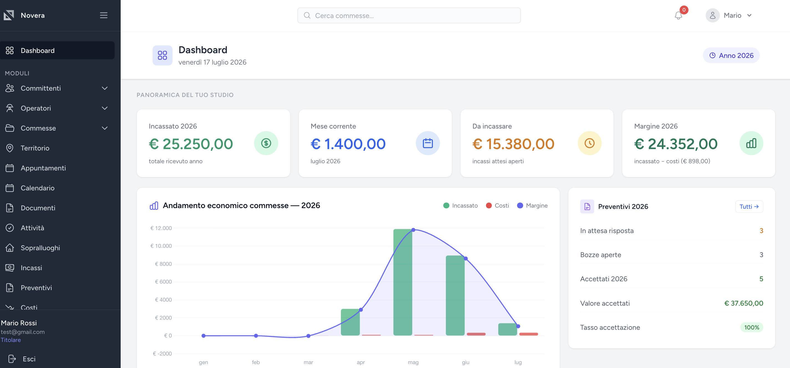
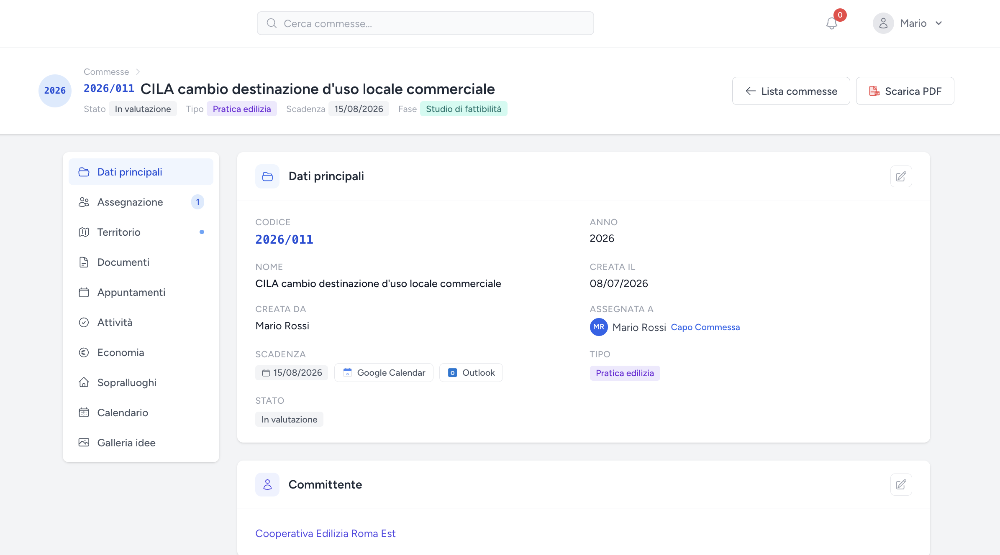
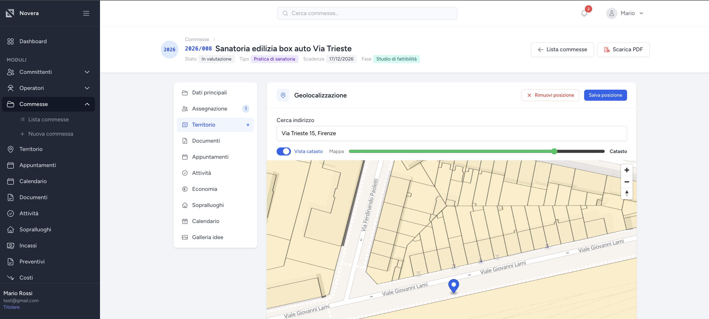
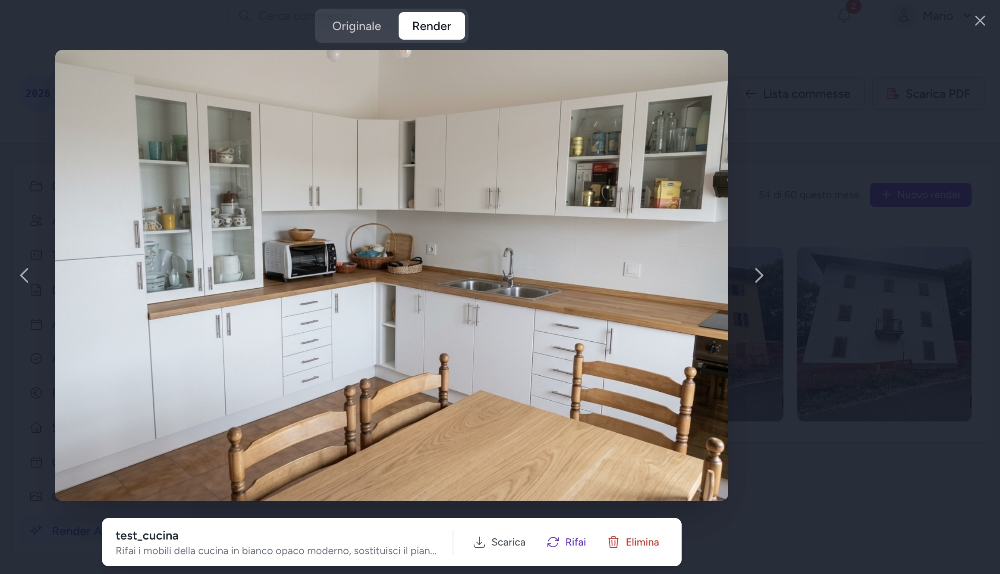

La stessa commessa in quattro posti diversi: come è nato Novera
Ottobre 2026 · Eugenio Giusti

Un mio amico è geometra e gestisce il suo studio da anni. Ogni volta che parlavamo di lavoro tornavano fuori gli stessi problemi. La stessa commessa viveva in quattro posti diversi: un foglio Excel, una catena di email, una cartella sul desktop e una chat WhatsApp. I preventivi venivano rifatti da capo ogni volta, anche quando ce n'era uno quasi identico di sei mesi prima. E a fine mese nessuno sapeva davvero dove fossero finite le ore.
Non era mancanza di organizzazione. Era il risultato di strumenti che non parlano tra loro. E gli costava tempo, soldi e, peggio ancora, la fiducia dei clienti.
È da lì che è partito Novera.
Il costo nascosto degli strumenti sparsi
Quando ci siamo seduti a guardare la sua settimana, il problema non era un grande disastro. Erano decine di piccole perdite:
- Cercare il file giusto, o richiamare il committente per un dato che si aveva già.
- Un preventivo mandato a marzo, un "ci penso" senza nessun posto dove segnarlo. A settembre quel lavoro lo stava facendo un altro.
- Il saldo di una pratica chiusa mesi prima, scoperto solo quando il commercialista ha chiesto i numeri.
- Una scadenza persa, scoperta davanti al cliente.
Nessuno ti paga per questo lavoro. Ma si accumula in ore ogni settimana, e in fatturato perso che non compare in nessun report.
Prima ascoltare, poi costruire
Non sono partito da una lista di funzionalità. Sono partito dal capire come lavora davvero uno studio tecnico: come nasce una commessa, chi ci mette le mani, quali documenti servono, quando arrivano i soldi e dove di solito le cose sfuggono.
Una cosa è diventata chiara in fretta: tutto ruota attorno alla commessa. Il committente, le persone assegnate, i documenti, i sopralluoghi, il preventivo, gli incassi. Novera è organizzato così. Apri una commessa e ne vedi tutta la storia in un posto solo, invece di ricostruirla a memoria.

Cosa ci guadagna lo studio
- Un solo posto per ogni commessa. Stato, scadenze, documenti, appuntamenti e attività, visibili a tutto il team.
- Preventivi in pochi passaggi. Preventivi professionali con PDF automatico, partendo da quello che si è già fatto.
- I soldi sotto controllo. Cosa è stato incassato, cosa manca e quanto rende davvero ogni commessa, senza aspettare il commercialista.
- Sopralluoghi dal telefono. Le foto scattate in cantiere finiscono direttamente nella commessa, con il verbale pronto da stampare.
- Mappa e catasto. Ogni commessa è sulla mappa con le particelle catastali e le zone urbanistiche, senza dover girare tra portali diversi.
- Un team che lavora insieme. Titolare, dipendenti e collaboratori esterni, ognuno con il giusto livello di accesso.

Anche il passaggio a Novera non doveva diventare un progetto a sé. Gli studi arrivano con anni di dati in Excel, quindi si possono importare in blocco, e i dati dei clienti si compilano da soli a partire dalla Partita IVA.
Un'AI che aiuta a chiudere lavori
L'intelligenza artificiale è entrata in Novera solo dove ha uno scopo concreto per lo studio.
Con i render AI, il tecnico fotografa un ambiente da ristrutturare e ottiene un'immagine di come potrebbe diventare. Il cliente vede il risultato prima che si tocchi un muro, e dire sì al preventivo diventa molto più facile.

Un assistente di scrittura prepara email ai clienti e preventivi partendo dai dati della commessa, così lo studio dedica il suo tempo al lavoro tecnico e non al foglio bianco. I dati personali dei clienti non escono dalla piattaforma.
Da un'idea a un prodotto in produzione
Novera è passato dalle prime chiacchierate a un prodotto online in abbonamento, con 30 giorni di prova gratuita e l'assistenza di chi l'ha costruito. Ho seguito tutto dall'inizio alla fine: capire il settore, disegnare i flussi di lavoro, sviluppare il software, renderlo sicuro e tenerlo in piedi in produzione.
La regola che ho seguito è stata semplice: ogni funzionalità deve risolvere un problema che qualcuno ha raccontato davvero. Le idee senza questa prova aspettano, per quanto belle sembrino.
Anche la tua attività ha i suoi "quattro posti"?
Ogni attività ha la sua versione di questa storia: dati sparsi tra Excel, email e chat, processi che dipendono dalla memoria di qualcuno, report che richiedono una giornata per essere messi insieme. Se ti suona familiare, posso aiutarti a trasformarlo in uno strumento costruito attorno a come lavori davvero.
E se hai uno studio tecnico, puoi provare Novera gratis per 30 giorni.